AIによる、HPリニューアルのご提案
1 TALK, 1 WEBSITE.
〜 1回話すだけのAIホームページ制作 〜
しゃべれば、できる。あなたの1時間を、1週間のスピード納品へ。
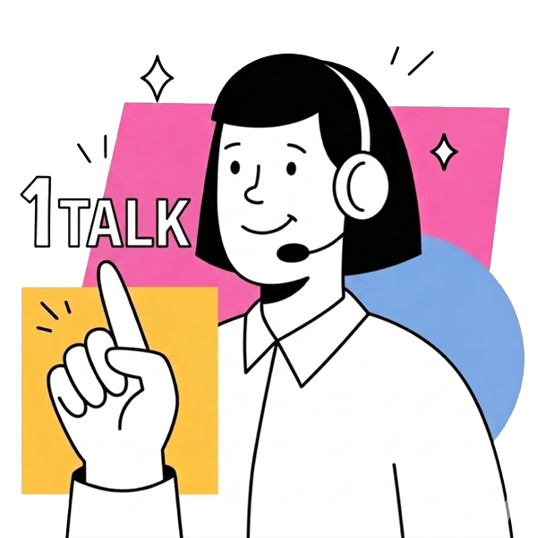
Problems & Solutions
WEB制作の課題と解決策
WEBサイト制作のために、何度も打ち合わせを重ねる時代は終わりました。
One-Talk Siteなら、1回（約60分）のヒアリングで、AIがこれまでの課題を解決し、あなたの想いをカタチにします。
時間の課題
要件定義に膨大な時間をとられる上に、初稿が出るまで数か月…
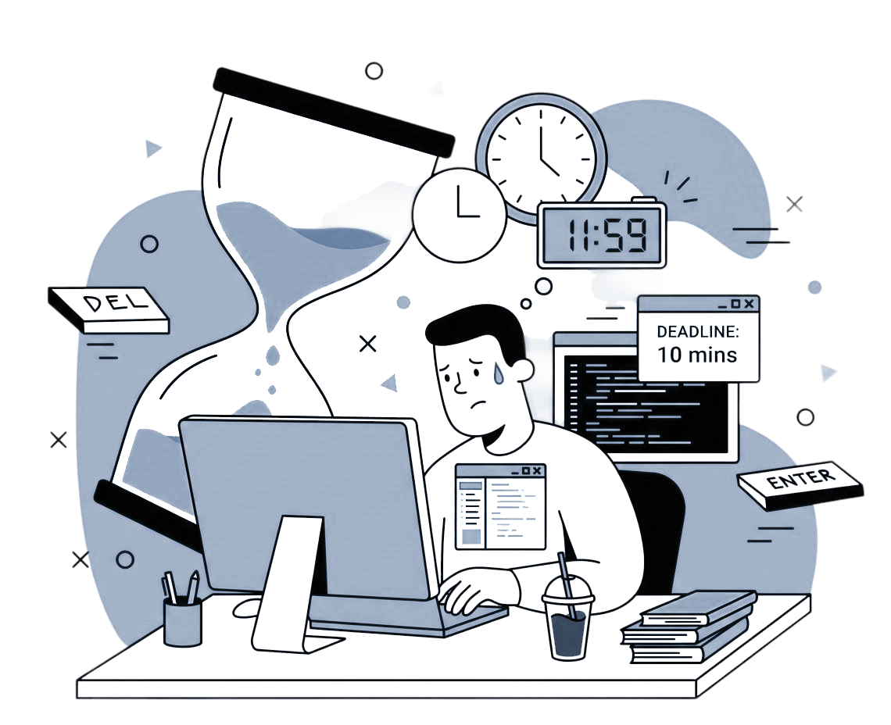
イメージの課題
思っていた出来と違う…けどもう直せない…
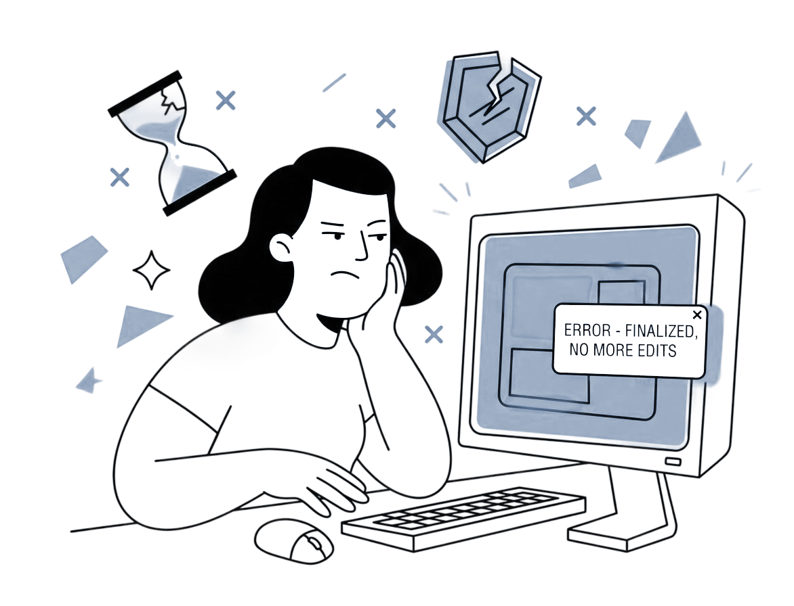
コストの課題
細かい仕様追加が必要になり、どんどんコスト追加…
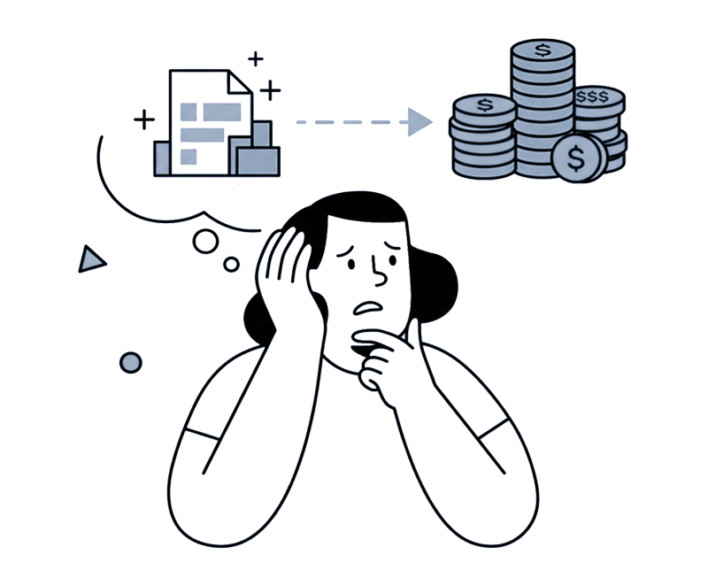
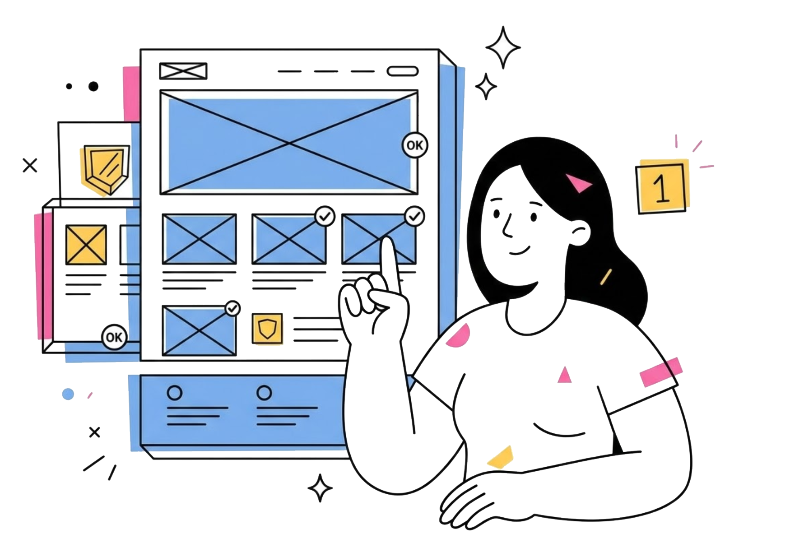
Talk Only
準備不要。担当者と1回話すだけで構成案からデザインまで自動生成。
1-Week Delivery
AIによる超速ワークフローで、最短1週間での公開を実現。
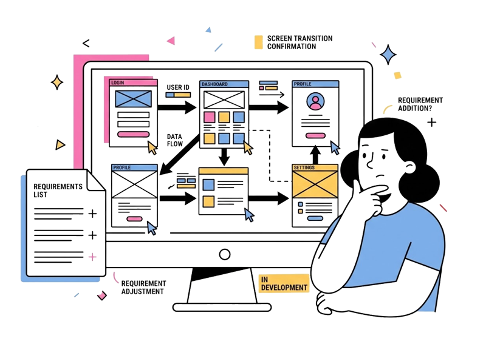
Smart Cost
人件費を極限まで削ることで、高品質ながら40万円〜の低価格を実現。
Timeline
圧倒的な製作期間短縮
「製作特化型AIツール活用」×「一気通貫の開発体制」で 高品質なWEBサイト製作を短期間・低コストで提供。 「1回話すだけ」で、会社の顔が新しくなります。
要件定義
約2ヶ月
文字ベースのヒアリングシートで要件を整理。認識ずれが起きやすく、後工程での手戻りの原因になりやすい。
ワイヤーフレーム作成
0.5ヶ月
画面構成を別途ドキュメントで作成。担当者間の承認フローが長引き、スケジュールを圧迫しやすい。
デザイン初稿
0.5ヶ月
初めてビジュアルを確認する段階。「これじゃない」感が発生しやすく、大量の戻しにつながるリスクがある。
修正対応
数ラウンド
デザイン・文言・構成の修正が複数ラウンド発生。そのたびにレビューと承認が必要で、期間が膨らむ。
実装
1ヶ月
デザイン確定後にコーディングを開始。テスト・動作検証も含めると長期化しやすく、コストも増大する。
公開
計：約半年
すべての工程を経てようやく公開。コスト・期間ともに当初想定を超えるケースが多い。
STEP 01
1時間
One-Talk ヒアリング（1時間）お客様の作業
目的・ターゲット・戦略をオンライン会話形式で確認。その場でワイヤを可視化するため認識ずれゼロ。
※ご要望によっては複数回になります
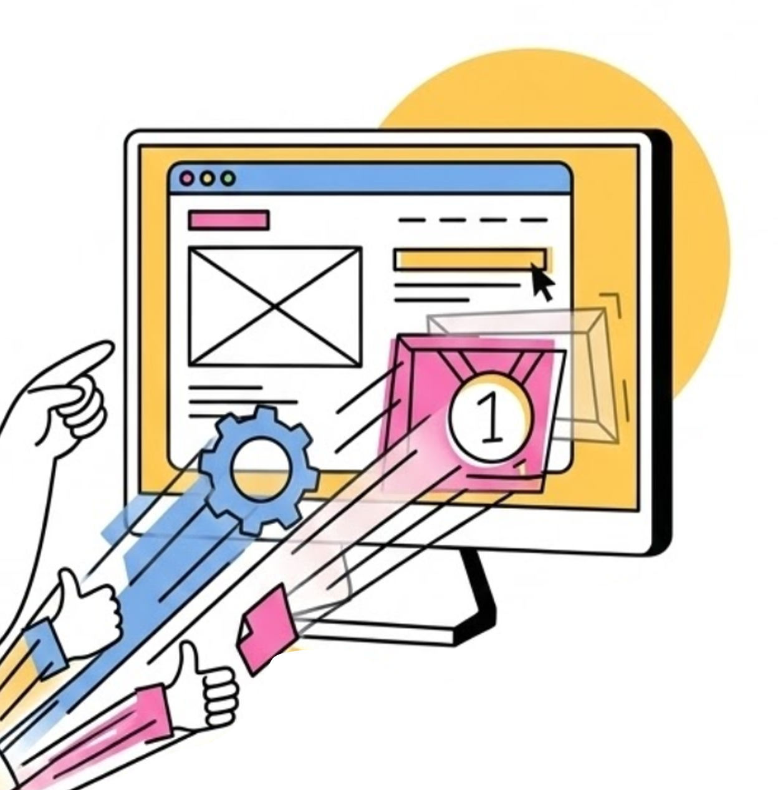
STEP 02
即日〜数日
AIによる構成・デザイン生成
AIツールを活用しデザインを高速生成。動きやインタラクションまでリアルタイムで確認・調整できる。
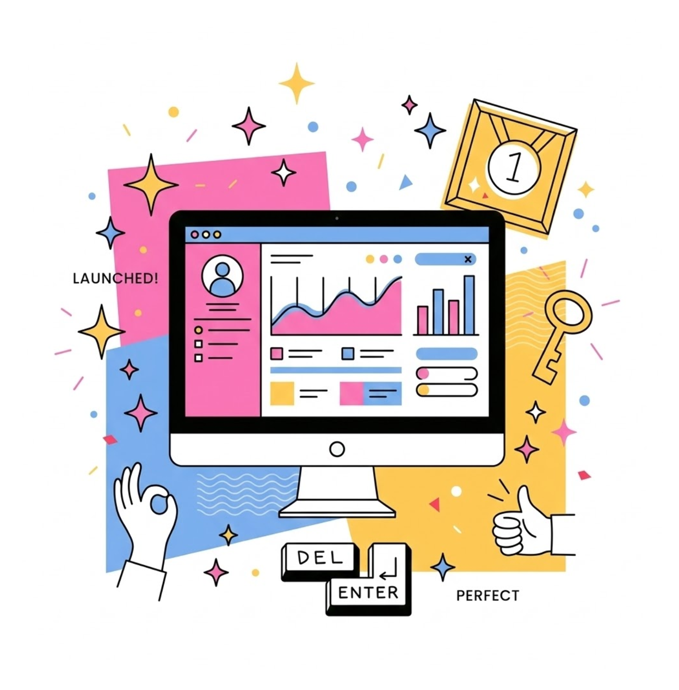
STEP 03
数日
初稿確認・調整
実際のビジュアルを見ながらフィードバックできるため、修正ラウンドはほぼ発生しない。
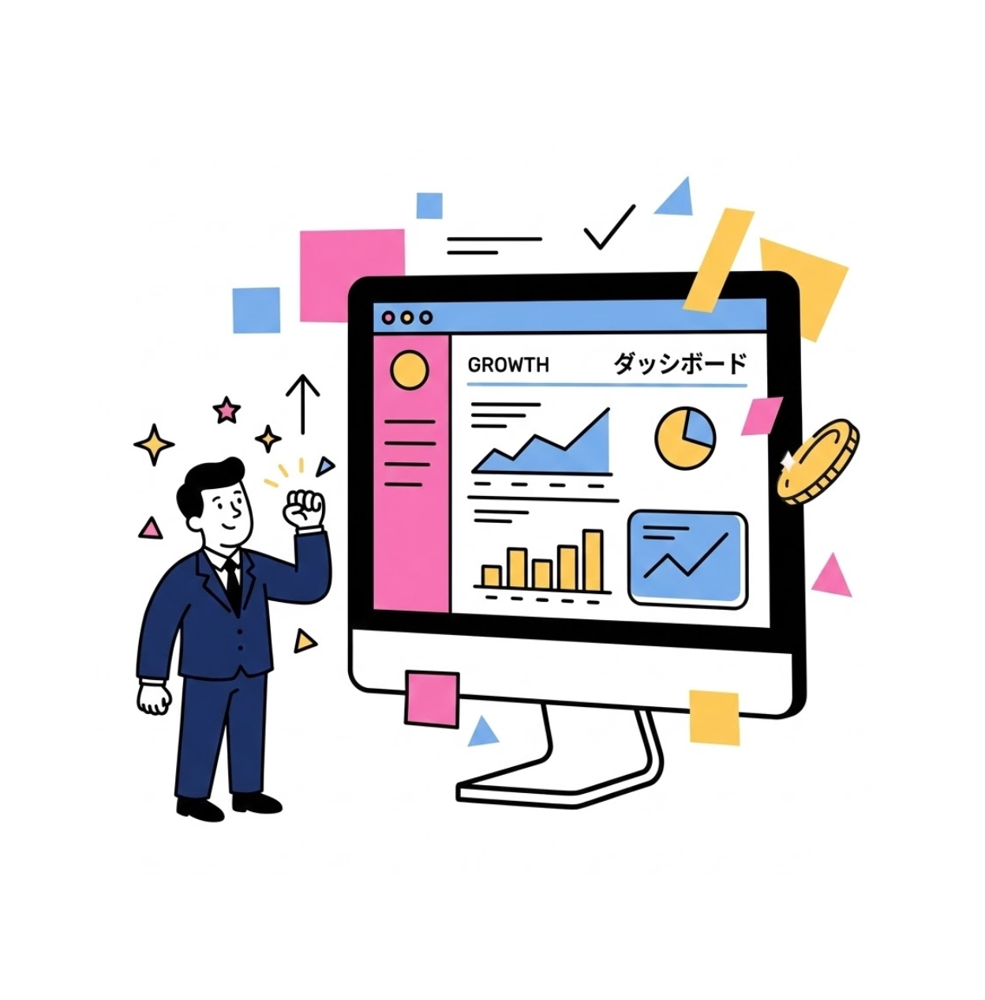
STEP 04
最短1週間
最短1週間で納品・公開
すべての工程を最短1週間で完結。高品質なWEBサイトがスピーディに手に入り、事業スタートを加速。
※ご要望によっては期日が延びます
AI SEO
これからのWEBサイトに求められる
「AI検索」への対応
Google検索だけでなく、ChatGPTなどのAIからも選ばれる情報源へ
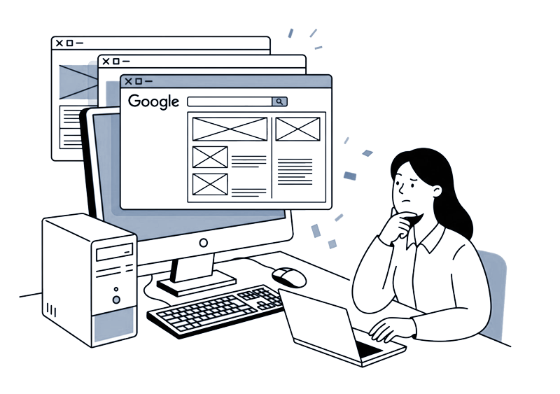
従来のGoogle検索対策(SEO)
人が見ることを前提とした最適化
検索のパラダイムシフト
構造化データ(AIO/AIEO)が鍵
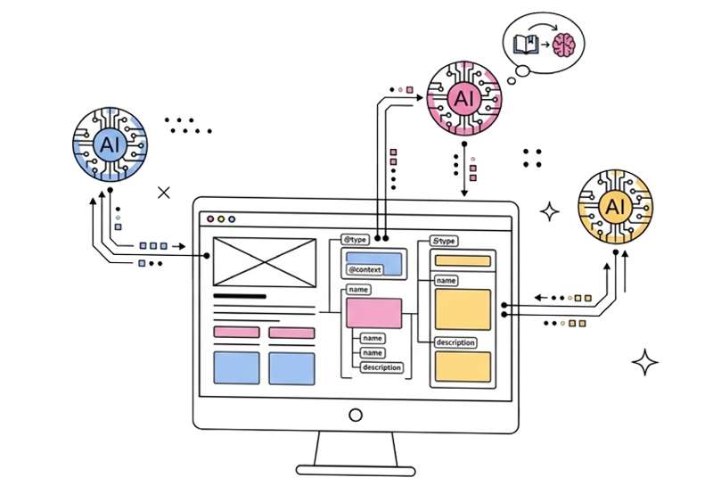
AI検索・対話型AI対策(AIO/AIEO)
AIが理解・学習しやすい構造化での最適化が必要
CMS
誰でも簡単にWEB更新
表示の仕組みと更新の仕組みを分けた、最新CMSを採用。専門知識がなくても、チャットで指示するだけでサイトを更新可能に。内製化により、運用コスト削減が期待できます。
チャットUIでWEBサイトを簡単更新
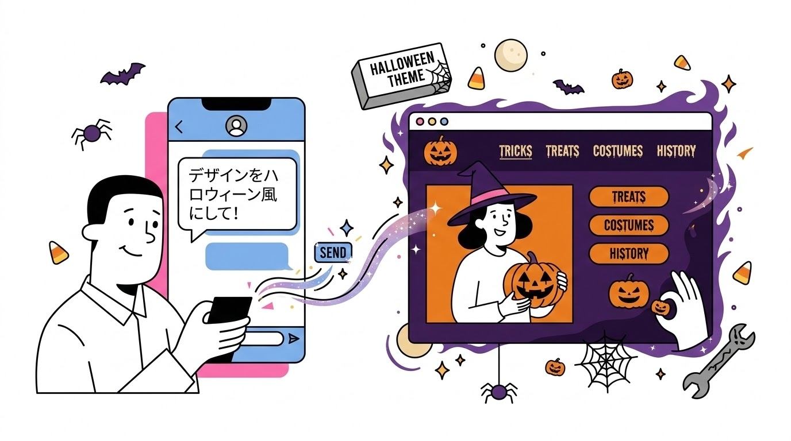
Pricing
料金プラン
「1回話すだけ」で、会社の顔が新しくなる。
One-Talk ライト
40万円〜
- AIによるデザイン・構成の自動生成
- スマートフォン完全対応（レスポンシブ）
- 更新が簡単なCMS機能の標準搭載
One-Talk スタンダード
80万円〜
- カスタムアニメーション・リッチデザイン
- 高度なSEO内部対策と設計
- 複数回のデザイン修正・チューニング対応
Flow
導入までの流れ
ご要望確認
ご支援範囲のご要望をヒアリング
お申込み/契約
当社よりお見積りを提出後、ご契約
サイト構築
ヒアリングMTGの上でデザイン案提示。修正ご要望をもとに最終化のうえ、実装
運用開始
WEBサイトオープン後、効果測定の上、月次でご報告。必要に応じ、改善提案も実施
すべて専任の営業担当者がサポートいたします
Support
ご支援体制
マーケティング力と技術力の両輪で、貴社を支援いたします。
マーケティング支援で培った、ユーザー理解とコンテンツ開発力
- ヒアリング
- 文言・構成案
- プロトタイプ作成
- Figmaデザイン
- 素材編集
- 各種MTGのリード
要望通りの実装を可能にする技術力
- HTML/CSS/JS実装
- SEO初期設定
- 公開作業
- WordPress/CMS構築
- サーバー設定